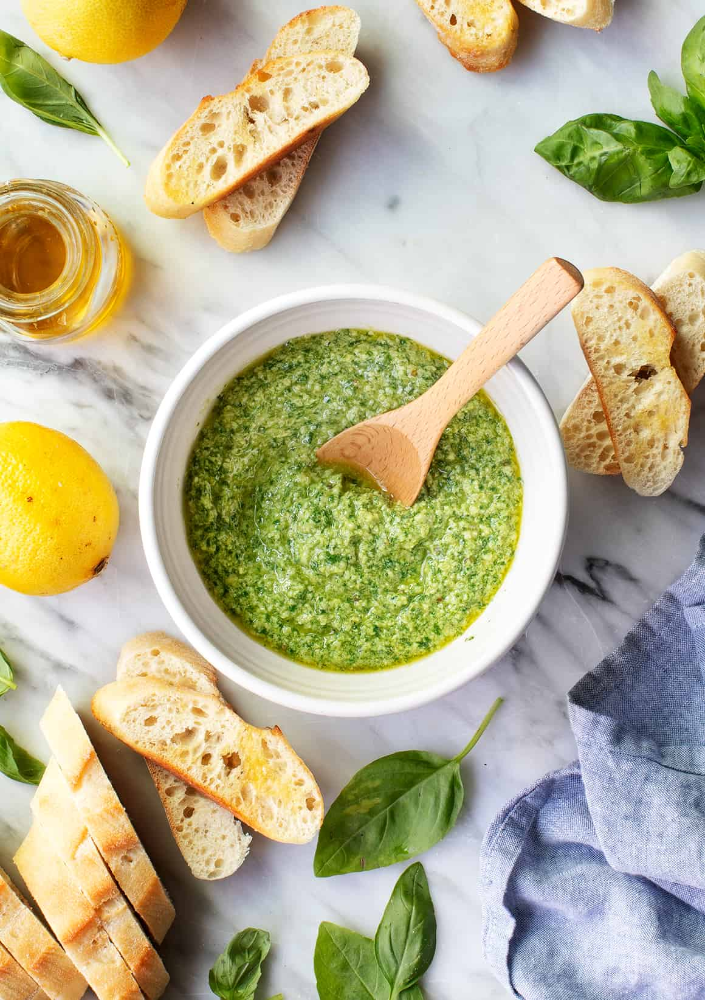

Pesto

Description
Pesto is one of my favorite condiments to keep on hand. Try these easy, fun pesto recipe variations to brighten pasta, salads, roasted veggies & more!
Traditional pesto is a blend of fresh basil, garlic, pine nuts, extra-virgin olive oil, and Parmesan cheese. It is typically made in a mortor and pestle, but can be made in a food processor or blender as well. There are many different nuts and herbs you can use to make your own pesto as well!
Ingredients
- 1/2 cup toasted pine nuts
- 2 tablespoons lemon juice
- 1 small garlic clove
- 1/4 teaspoon sea salt
- freshly ground black pepper
- 2 cups basil leaves
- 1/4 cup extra-virgin olive oil, more for a smoother pesto
- 1/4 cup grated parmesan cheese, optional
Steps
- In a food processor, combine the pine nuts, lemon juice, garlic, salt, pepper, and pulse until well chopped.
- Add the basil and pulse until combined.
- With the food processor running, drizzle in the olive oil and pulse until combined. Add the parmesan cheese, if using, and pulse to briefly combine. For a smoother pesto, add more olive oil.